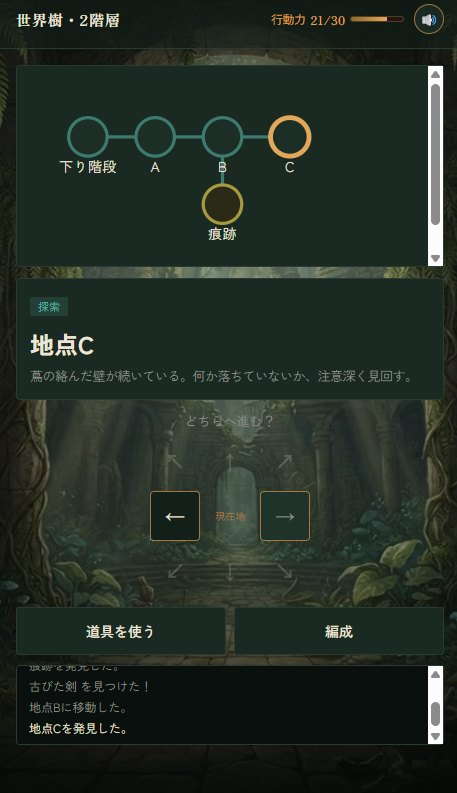
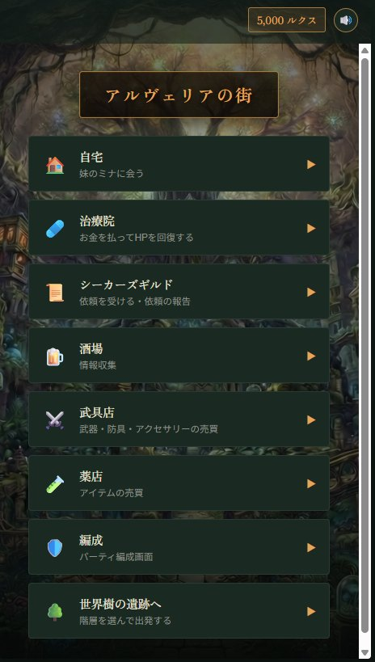

こんにちは、Arcadia Worksです。
先日紹介ページでお知らせした新作RPG『楽園の残響 ―彼方より継ぐもの―』を、フリーゲーム夢現で公開しました。Spirit Trekと同じく、ブラウザからそのまま遊べます。
どんなゲーム？
舞台は、雲の上まで伸びる巨大な「世界樹」と、そのふもとの街アルヴェリア。世界樹の内側に広がる古代遺跡を、仲間たちと一緒に一階層ずつ登っていく、物語重視のRPGです。
- 会話パート：仲間たちとの掛け合いで物語が進みます
- 街：ギルドの依頼、武具や薬の買い物、酒場での噂集め
- 探索：行動力をやりくりしながら、世界樹の階層をマップで進みます
- バトル：パーティ全体でMPを共有するコマンドバトル


遊んでほしいところ
Sprit Trekとは違い、長く時間を取ってプレイするタイプのRPGになります。
ストーリーやBGM等、力を入れて作った部分も多いので、是非少しでもお楽しみいただければと思います。
これから
感想や不具合の報告は、X（@Arcadia_Works）や夢現のページからいただけるとうれしいです。いただいた声を見ながら、少しずつ手を入れていきます。
詳しい紹介はゲームページにまとめています。世界樹の頂に何があるのか、よければ確かめに来てください。